Taotao Wang, Associate Professor
College of Electronics and Information Engineering, Shenzhen University
The Concept of Complex Numbers
In the real number system, the equation $\displaystyle x^2=-1$ has no solution. To solve such equations, we introduce the imaginary unit（虚数单位） $\displaystyle i$ (often denoted by $\displaystyle j$ in electrical engineering), defined by $\displaystyle i^2=-1$. Thus, $\displaystyle i$ is a solution of $\displaystyle x^2=-1$.
For any real numbers $\displaystyle x$ and $\displaystyle y$, the number $\displaystyle z=x+iy$ is called a complex number（复数）. The quantities $\displaystyle x$ and $\displaystyle y$ are the real part（实部） and imaginary part（虚部） of $\displaystyle z$, respectively, and are denoted by $\displaystyle x=\operatorname{Re}(z)$ and $\displaystyle y=\operatorname{Im}(z)$.
When the coefficient of $\displaystyle i$ is numerical, we usually write $\displaystyle i$ after the coefficient, as in $\displaystyle 2+3i$. When the coefficient is a variable, we often write $\displaystyle i$ before it, as in $\displaystyle a+ib$.
If $\displaystyle x=0$ and $\displaystyle y\neq0$, then $\displaystyle z=iy$ is called a purely imaginary number（纯虚数）. If $\displaystyle y=0$, then $\displaystyle z=x$, so every real number is naturally a complex number.
Expressions of Complex Numbers
A complex number $\displaystyle z=x+iy$ is uniquely determined by the ordered pair（有序数对） $\displaystyle (x,y)$. Therefore, complex numbers are in one-to-one correspondence with points in a two-dimensional Cartesian coordinate system（二维直角坐标系）: the number $\displaystyle z=x+iy$ is represented by the point $\displaystyle (x,y)$. This plane is called the complex plane（复平面）, or the $\displaystyle z$-plane. The $\displaystyle x$-axis is called the real axis（实轴）, and the $\displaystyle y$-axis is called the imaginary axis（虚轴）.
Each complex number $\displaystyle z=x+iy$ determines exactly one point $\displaystyle (x,y)$ in the complex plane, and vice versa. This correspondence allows us to study complex functions using geometric language and methods, and it provides a geometric foundation for many engineering applications.
In the complex plane, $\displaystyle z=x+iy$ also corresponds to the position vector（位置向量） $\displaystyle \overrightarrow{OP}$ from the origin（原点） $\displaystyle O$ to the point $\displaystyle P=(x,y)$ (see Figure 1.1). This is the vector representation（向量表示） of $\displaystyle z$. The length of this vector is called the modulus（模）, or absolute value（绝对值）, of $\displaystyle z$ and is denoted by \[\abs{z}=r=\sqrt{x^2+y^2} \tag{1.1.1}\]
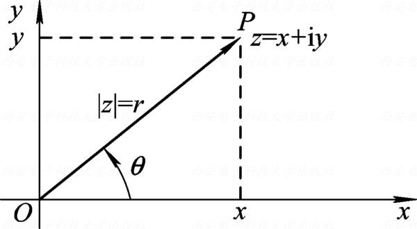
The following inequalities are immediate: \[\abs{x}\leq\abs{z},\quad \abs{y}\leq\abs{z},\quad \abs{z}\leq\abs{x}+\abs{y}.\] For $\displaystyle z\neq0$, an angle $\displaystyle \theta$ measured counterclockwise（逆时针） from the positive real axis to the vector $\displaystyle \overrightarrow{OP}$ is called an argument（幅角） of $\displaystyle z$. Since $\displaystyle x=r\cos\theta$ and $\displaystyle y=r\sin\theta$, we have \[\tan\theta=\frac{y}{x}\quad(x\neq0). \tag{1.1.2}\]
Every nonzero complex number has infinitely many arguments (see Figure 1.2). If $\displaystyle \theta_1$ is one argument of $\displaystyle z$, then all its arguments are \[\Arg z=\{\theta_1+2k\pi:k\in\mathbb{Z}\}. \tag{1.1.3}\] Here, $\displaystyle \Arg z$ denotes the set of all arguments of $\displaystyle z$.
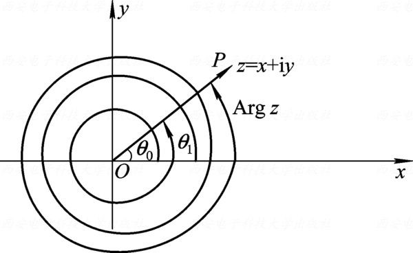
Among all arguments of $\displaystyle z$, the unique value $\displaystyle \theta_0$ satisfying $\displaystyle -\pi<\theta_0\leq\pi$ is called the principal argument（幅角主值） and is denoted by $\displaystyle \arg z=\theta_0$. Hence, \[\Arg z=\{\arg z+2k\pi:k\in\mathbb{Z}\}. \tag{1.1.4}\] The argument of $\displaystyle z=0$ is undefined.
For $\displaystyle z=x+iy\neq0$, the principal argument can be determined from $\displaystyle \arctan(y/x)$ together with the quadrant（象限） of $\displaystyle z$:
\[\arg z(z\neq 0)=\begin{cases} \arctan\!\left(\frac{y}{x}\right) & (z\text{ is in the 1st or 4th quadrant}) \\ \arctan\!\left(\frac{y}{x}\right)+\pi & (z\text{ is in the 2nd quadrant}) \\ \arctan\!\left(\frac{y}{x}\right)-\pi & (z\text{ is in the 3rd quadrant}) \\ \frac{\pi}{2} & (z\text{ is on the positive imaginary axis}) \\ -\frac{\pi}{2} & (z\text{ is on the negative imaginary axis}) \\ \pi & (z\text{ is on the negative real axis}) \\ 0 & (z\text{ is on the positive real axis}) \end{cases}\tag{1.1.5}\]
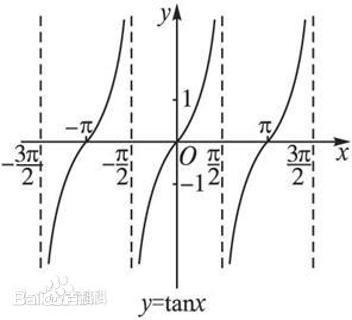
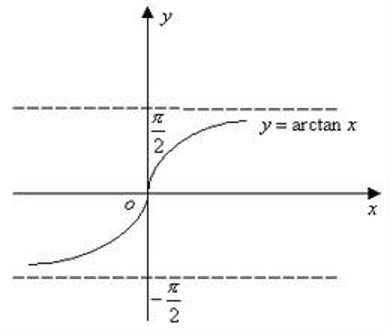
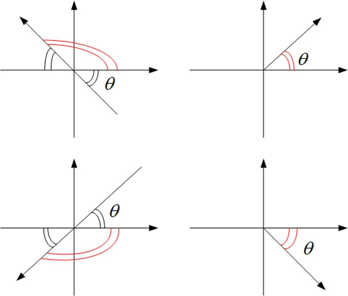
Find all arguments and the principal argument of $\displaystyle 1+i$ and $\displaystyle -3\sqrt{3}-3i$.
For $\displaystyle z=1+i$, the point lies in the first quadrant, so its principal argument is \[\arg z=\arctan\frac{y}{x}=\arctan1=\frac{\pi}{4}\] The arguments are given by \[\Arg z=\arg z+2k\pi=\frac{\pi}{4}+2k\pi\quad(k\in\mathbb{Z}).\]
For $\displaystyle z=-3\sqrt{3}-3i$, the point lies in the third quadrant, so its principal argument is \[\arg z=\arctan\frac{y}{x}-\pi=\arctan\frac{-3}{-3\sqrt{3}}-\pi=-\frac{5}{6}\pi.\] All its arguments are \[\Arg z=\arg z+2k\pi=-\frac{5}{6}\pi+2k\pi\quad(k\in\mathbb{Z}).\]
Using the relations between rectangular coordinates（直角坐标） and polar coordinates（极坐标）, $\displaystyle x=r\cos\theta$ and $\displaystyle y=r\sin\theta$, we can write \[z=r(\cos\theta+i\sin\theta) \tag{1.1.6}\] where $\displaystyle r$ is the modulus of $\displaystyle z$ and $\displaystyle \theta$ is any argument of $\displaystyle z$. This is called the trigonometric form（三角形式） of $\displaystyle z$.
Using Euler's formula（欧拉公式） $\displaystyle e^{i\theta}=\cos\theta+i\sin\theta$, the trigonometric form becomes \[z=re^{i\theta} \tag{1.1.7}\] This is called the exponential form（指数形式） of $\displaystyle z$. Because $\displaystyle \theta$ may be replaced by $\displaystyle \theta+2k\pi$, the trigonometric and exponential forms are not unique, even though they represent the same complex number.
Express $\displaystyle z=1+\sin1+i\cos1$ in trigonometric and exponential forms.
First compute the modulus $\displaystyle r$ and the principal argument $\displaystyle \arg z$: \[\begin{aligned} r^2 & =(1+\sin1)^2+\cos^2 1=2(1+\sin1) \\ & =2\left[1+\cos\left(\frac{\pi}{2}-1\right)\right]=4\cos^2\left(\frac{\pi}{4}-\frac{1}{2}\right) \\ r & =2\cos\left(\frac{\pi}{4}-\frac{1}{2}\right)>0 \end{aligned}\]
Since $\displaystyle 1+\sin1>0$ and $\displaystyle \cos1>0$, the point $\displaystyle z$ lies in the first quadrant. \[\begin{aligned} \arg z & =\arctan\frac{y}{x}=\arctan\left(\frac{\cos1}{1+\sin1}\right) \\ & =\arctan\left[\frac{\sin\left(\frac{\pi}{2}-1\right)}{1+\cos\left(\frac{\pi}{2}-1\right)}\right] \\ & =\arctan\left[\frac{2\sin\left(\frac{\pi}{4}-\frac{1}{2}\right)\cos\left(\frac{\pi}{4}-\frac{1}{2}\right)}{2\cos^2\left(\frac{\pi}{4}-\frac{1}{2}\right)}\right] \\ & =\left(\frac{\pi}{4}-\frac{1}{2}\right) \end{aligned}\]
Therefore, the trigonometric form of $\displaystyle z$ is \[z=2\cos\left(\frac{\pi}{4}-\frac{1}{2}\right)\left[\cos\left(\frac{\pi}{4}-\frac{1}{2}\right)+i\sin\left(\frac{\pi}{4}-\frac{1}{2}\right)\right]\] Its exponential form is \[z=2\cos\left(\frac{\pi}{4}-\frac{1}{2}\right)e^{i\left(\frac{\pi}{4}-\frac{1}{2}\right)}\] When writing a trigonometric or exponential form, it is usually convenient to choose $\displaystyle \theta=\arg z$.
On the nonuniqueness of arguments:
All arguments of $\displaystyle 1+i$ are $\displaystyle \pi/4+2k\pi$, where $\displaystyle k\in\mathbb{Z}$;
Its exponential forms are $\displaystyle \sqrt{2}e^{i(\pi/4+2k\pi)}$, all of which have the same value;
Using the principal argument, we usually write the complex number simply as $\displaystyle \sqrt{2}e^{i\pi/4}$.
Four Arithmetic Operations of Complex Numbers
The sum and difference of two complex numbers $\displaystyle z_1=x_1+iy_1$ and $\displaystyle z_2=x_2+iy_2$ are defined by \[(x_1+iy_1)\pm(x_2+iy_2)=(x_1\pm x_2)+i(y_1\pm y_2) \tag{1.2.1}\] Thus, we add or subtract the real parts and imaginary parts separately. When $\displaystyle y_1=y_2=0$, these definitions reduce to the usual operations on real numbers.
Let $\displaystyle z_1$ and $\displaystyle z_2$ be represented by the vectors $\displaystyle \overrightarrow{OP_1}$ and $\displaystyle \overrightarrow{OP_2}$. Complex addition and subtraction agree with vector addition and subtraction. Hence, the diagonal（对角线） $\displaystyle \overrightarrow{OP}$ of the parallelogram（平行四边形） with adjacent sides（邻边） $\displaystyle \overrightarrow{OP_1}$ and $\displaystyle \overrightarrow{OP_2}$ represents $\displaystyle z_1+z_2$, while $\displaystyle \overrightarrow{P_2P_1}$ represents $\displaystyle z_1-z_2$ (see Figure 1.3).
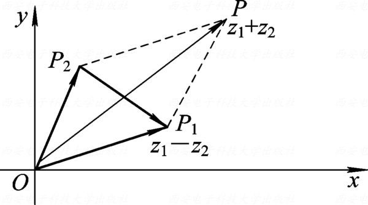
By the parallelogram rule（平行四边形法则）, the lengths $\displaystyle \abs{z_1}$, $\displaystyle \abs{z_2}$, and $\displaystyle \abs{z_1-z_2}$ form the side lengths of a triangle. In particular, $\displaystyle \abs{z_1-z_2}$ is the length of $\displaystyle \overrightarrow{P_2P_1}$, that is, the distance between the points $\displaystyle z_1$ and $\displaystyle z_2$. Indeed, \[\abs{z_1-z_2}=\abs{(x_1-x_2)+i(y_1-y_2)}=\sqrt{(x_1-x_2)^2+(y_1-y_2)^2}\] which is precisely the distance formula in the plane.
The lengths $\displaystyle \abs{z_1}$, $\displaystyle \abs{z_2}$, and $\displaystyle \abs{z_1+z_2}$ also form the side lengths of a triangle. Therefore, the triangle inequality（三角不等式） and reverse triangle inequality（反三角不等式） give \[\abs{z_1+z_2}\leq\abs{z_1}+\abs{z_2},\quad\abs{z_1-z_2}\geq\abs{\abs{z_1}-\abs{z_2}}\] Multiplication and division are defined by \[\begin{aligned} z_1z_2 & =(x_1x_2-y_1y_2)+i(x_1y_2+x_2y_1), \\ \frac{z_1}{z_2} & =\frac{(x_1+iy_1)(x_2-iy_2)}{x_2^2+y_2^2} \\ & =\frac{x_1x_2+y_1y_2}{x_2^2+y_2^2}+i\frac{x_2y_1-x_1y_2}{x_2^2+y_2^2}\quad(z_2\neq 0). \end{aligned}\tag{1.2.2}\]
The multiplication and division formulas are especially transparent in trigonometric form. Let $\displaystyle z_1=r_1(\cos\theta_1+i\sin\theta_1)$ and $\displaystyle z_2=r_2(\cos\theta_2+i\sin\theta_2)$. Then
\[\begin{aligned} z_1z_2 & =r_1r_2(\cos\theta_1+i\sin\theta_1)(\cos\theta_2+i\sin\theta_2) \\ & =r_1r_2[(\cos\theta_1\cos\theta_2-\sin\theta_1\sin\theta_2)+i(\sin\theta_1\cos\theta_2+\cos\theta_1\sin\theta_2)] \\ & =r_1r_2[\cos(\theta_1+\theta_2)+i\sin(\theta_1+\theta_2)] \end{aligned}\tag{1.2.3}\]
Similarly, for $\displaystyle z_2\neq0$, \[\frac{z_1}{z_2}=\frac{r_1(\cos\theta_1+i\sin\theta_1)}{r_2(\cos\theta_2+i\sin\theta_2)}=\frac{r_1}{r_2}[\cos(\theta_1-\theta_2)+i\sin(\theta_1-\theta_2)] \tag{1.2.4}\]
If $\displaystyle z_1=r_1e^{i\theta_1}$ and $\displaystyle z_2=r_2e^{i\theta_2}$, the corresponding exponential formulas are \[\begin{split}
z_1z_2&=r_1e^{i\theta_1}r_2e^{i\theta_2}=r_1r_2e^{i(\theta_1+\theta_2)}\\
\frac{z_1}{z_2}&=\frac{r_1e^{i\theta_1}}{r_2e^{i\theta_2}}=\frac{r_1}{r_2}e^{i(\theta_1-\theta_2)}\quad(r_2\neq 0)
\end{split}
\tag{1.2.5}\]
Consequently, \[\abs{z_1z_2}=\abs{z_1}\abs{z_2},\quad\abs{\frac{z_1}{z_2}}=\frac{\abs{z_1}}{\abs{z_2}} \tag{1.2.6}\] For principal arguments, the corresponding relations are understood modulo $\displaystyle 2\pi$: \[\begin{cases} \arg (z_1z_2)\equiv\arg z_1+\arg z_2 \pmod{2\pi}, \\ \arg \left(\frac{z_1}{z_2}\right)\equiv\arg z_1-\arg z_2 \pmod{2\pi}. \end{cases}\tag{1.2.7}\]
For example, if $\displaystyle z_1=-1$ and $\displaystyle z_2=i$, then $\displaystyle z_1z_2=-i$, so \[\Arg z_1=\pi+2n\pi\quad(n\in\mathbb{Z})\] \[\Arg z_2=\frac{\pi}{2}+2m\pi\quad(m\in\mathbb{Z})\] \[\Arg z_1z_2=-\frac{\pi}{2}+2k\pi\quad(k\in\mathbb{Z})\]
Choosing arbitrary representatives of these arguments, we obtain \[\frac{3\pi}{2}+2(m+n)\pi=-\frac{\pi}{2}+2k\pi\] This equality holds exactly when $\displaystyle k=m+n+1$. Thus, for any chosen $\displaystyle m,n\in\mathbb{Z}$, an appropriate $\displaystyle k$ always exists, and conversely. For example, if $\displaystyle m=n=0$, then $\displaystyle k=1$; if $\displaystyle k=-1$, one may take $\displaystyle (m,n)=(0,-2)$ or $\displaystyle (-2,0)$.
The trigonometric and exponential forms reveal the geometric meaning of multiplication. The vector representing $\displaystyle z_1z_2$ is obtained from the vector representing $\displaystyle z_1$ by scaling（尺度变换） its length by $\displaystyle r_2=\abs{z_2}$ and rotating（旋转） it through an argument of $\displaystyle z_2$ (see Figure 1.4).
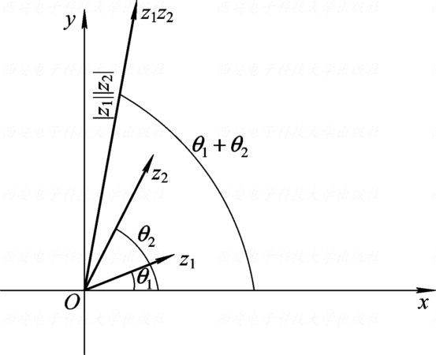
Which expression scales the modulus of $\displaystyle z$ by $\displaystyle \sqrt{2}$ and rotates its vector counterclockwise through $\displaystyle \frac{\pi}{4}$? \[\mathrm{A}.z\sqrt{2}e^{-i\frac{\pi}{4}}\qquad \mathrm{B}.\frac{z}{\sqrt{2}}e^{-i\frac{\pi}{4}}\qquad \mathrm{C}.\frac{z}{\sqrt{2}}e^{i\frac{\pi}{4}}\qquad \mathrm{D}.z\sqrt{2}e^{i\frac{\pi}{4}}\]
The expression $\displaystyle \frac{z}{1-\sqrt{3}i}$ scales the modulus of $\displaystyle z$ by and changes its argument by .
Let $\displaystyle z_3=\frac{z_1}{z_2}$. Suppose $\displaystyle \abs{z_3}=\frac{1}{5}\abs{z_1}$ and the argument of $\displaystyle z_3$ is obtained by rotating the argument of $\displaystyle z_1$ counterclockwise through $\displaystyle \frac{\pi}{6}$. Find $\displaystyle z_2$.
Let $\displaystyle z_1$ and $\displaystyle z_2$ be arbitrary points in the complex plane. Prove that $\displaystyle \abs{z_1-z_2}\geq\abs{\abs{z_1}-\abs{z_2}}$.
Geometrically, the inequality states that one side of a triangle is at least the absolute difference of the other two side lengths. Algebraically, it follows from the triangle inequality $\displaystyle \abs{z_1+z_2}\leq\abs{z_1}+\abs{z_2}$.
Because \[\abs{z_1}=\abs{z_1-z_2+z_2}\leq\abs{z_1-z_2}+\abs{z_2}\]
\[\abs{z_1}-\abs{z_2}\leq\abs{z_1-z_2} \tag{1}\] Because \[\abs{z_2}=\abs{z_2-z_1+z_1}\leq\abs{z_2-z_1}+\abs{z_1}\] \[\abs{z_2}-\abs{z_1}\leq\abs{z_2-z_1} \tag{2}\] Using inequalities (1) and (2), we have \[\abs{z_1-z_2}\geq\abs{\abs{z_1}-\abs{z_2}}\]
Two vertices（顶点） of an equilateral triangle（等边三角形） are $\displaystyle z_1=1+2i$ and $\displaystyle z_2=3+2i$. Find the possible third vertices.
As shown in Figure 1.5, fix $\displaystyle z_1$ and rotate the vector $\displaystyle z_2-z_1$ through $\displaystyle \frac{\pi}{3}$ or $\displaystyle -\frac{\pi}{3}$. The endpoint（终点） of the resulting vector is a possible third vertex $\displaystyle z_3$: \[z_3=z_1+(z_2-z_1)e^{\pm i\pi/3}=(1+2i)+2\left(\frac12\pm i\frac{\sqrt3}{2}\right)=2+(2\pm\sqrt3)i.\]
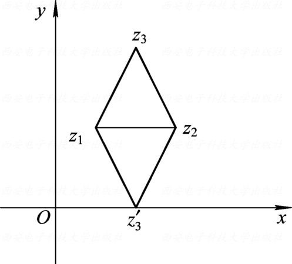
As with real numbers, complex addition and multiplication satisfy the commutative, associative, and distributive laws: \[z_1+z_2=z_2+z_1;\ z_1z_2=z_2z_1 \tag{commutative law}\] \[z_1+(z_2+z_3)=(z_1+z_2)+z_3;\ z_1(z_2z_3)=(z_1z_2)z_3 \tag{associative law}\] \[z_1(z_2+z_3)=z_1z_2+z_1z_3 \tag{distributive law}\] Together with these operations, the set of complex numbers forms the complex field（复数域）, denoted by $\displaystyle \mathbb{C}$.
Powers and Roots of Complex Numbers
For $\displaystyle n\in\mathbb{N}$, the product of $\displaystyle n$ copies of $\displaystyle z$ is called the $\displaystyle n$-th power of $\displaystyle z$ and is denoted by $\displaystyle z^n$: \[z^n=\underbrace{z\cdot z\cdots z}_{n\text{ factors}}.\] If $\displaystyle z=re^{i\theta}$, then \[z^n=r^ne^{in\theta}=r^n(\cos n\theta+i\sin n\theta)\quad(n\in\mathbb{N})\] In particular, when $\displaystyle r=1$, de Moivre's formula（棣莫弗公式） is obtained: \[(\cos\theta+i\sin\theta)^n=(\cos n\theta+i\sin n\theta) \tag{1.2.8}\]
For $\displaystyle n\in\mathbb{N}$, we have $\displaystyle z^n=r^n(\cos n\theta+i\sin n\theta)$. If $\displaystyle z\neq0$, negative integer powers are defined by $\displaystyle z^{-n}=1/z^n$. Thus, \[\begin{aligned} z^{-n} & =\frac{1}{r^ne^{in\theta}}=r^{-n}e^{-in\theta} \\ & =r^{-n}[\cos(-n\theta)+i\sin(-n\theta)]. \end{aligned}\] Therefore, $\displaystyle z^m=r^m(\cos m\theta+i\sin m\theta)$ for every $\displaystyle m\in\mathbb{Z}$, provided $\displaystyle z\neq0$ when $\displaystyle m<0$.
Let $\displaystyle z\neq0$. If $\displaystyle \omega^n=z$, then $\displaystyle \omega$ is called an $\displaystyle n$-th root（$\displaystyle n$ 次方根） of $\displaystyle z$. Write $\displaystyle z=re^{i\theta}=r(\cos\theta+i\sin\theta)$ and $\displaystyle \omega=\rho e^{i\varphi}=\rho(\cos\varphi+i\sin\varphi)$. Using the power formula for the trigonometric form together with $\displaystyle \omega^n=z$, we obtain \[\rho^n(\cos n\varphi+i\sin n\varphi)=r(\cos\theta+i\sin\theta) \tag{1.2.9}\]
Thus, $\displaystyle \rho^n=r$, $\displaystyle \cos n\varphi=\cos\theta$, and $\displaystyle \sin n\varphi=\sin\theta$. The necessary and sufficient conditions for (1.2.9) are \[\rho ^n=r,\;\; n\varphi=\theta+2k\pi\quad(k\in\mathbb{Z})\] Therefore, $\displaystyle \rho=r^{1/n}$ and $\displaystyle \varphi=(\theta+2k\pi)/n$, where $\displaystyle r^{1/n}$ is the positive real $\displaystyle n$-th root of $\displaystyle r$. Hence, \[\omega_k=r^{1/n}\left(\cos\frac{\theta+2k\pi}{n}+i\sin\frac{\theta+2k\pi}{n}\right). \tag{1.2.10}\]
For $\displaystyle k=0,1,2,\ldots,n-1$, formula (1.2.10) gives $\displaystyle n$ distinct roots: \[\omega_0=r^\frac{1}{n}\left(\cos\frac{\theta}{n}+i\sin\frac{\theta}{n}\right)\] \[\omega_1=r^\frac{1}{n}\left(\cos\frac{\theta+2\pi}{n}+i\sin\frac{\theta+2\pi}{n}\right)\] \[\vdots\] \[\omega_{n-1}=r^\frac{1}{n}\left(\cos\frac{\theta+2(n-1)\pi}{n}+i\sin\frac{\theta+2(n-1)\pi}{n}\right)\] Other integer values of $\displaystyle k$ repeat these roots. For example, \[\omega_n=r^\frac{1}{n}\left(\cos\frac{\theta+2n\pi}{n}+i\sin\frac{\theta+2n\pi}{n}\right)=\omega_0\]
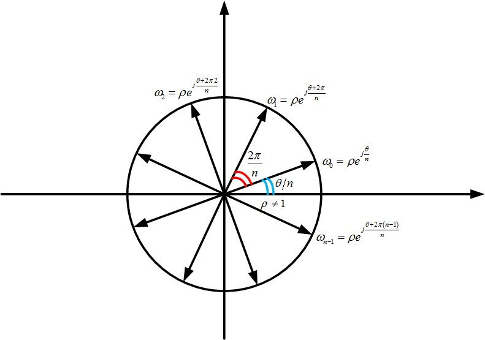
In particular, when $\displaystyle z=1$, let \[\omega=\cos\frac{2\pi}{n}+i\sin\frac{2\pi}{n}\] Then the $\displaystyle n$-th roots of unity（单位根） are $\displaystyle 1,\omega,\omega^2,\ldots,\omega^{n-1}$.
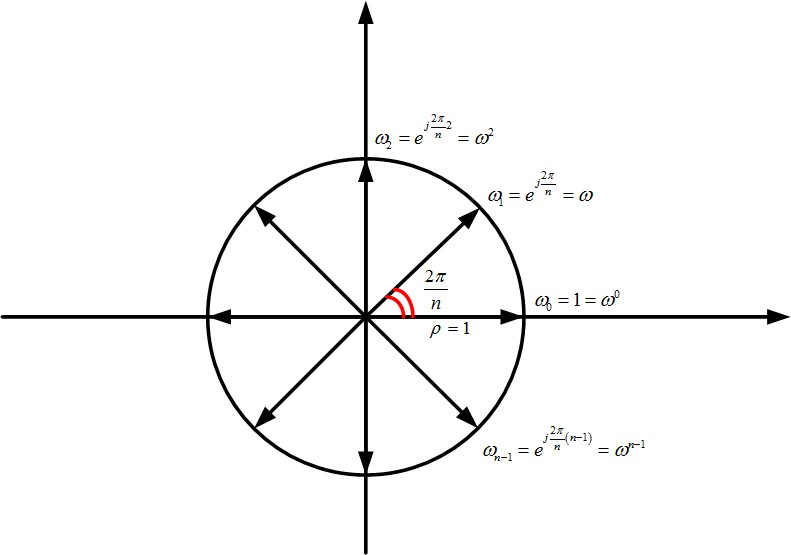
Evaluate $\displaystyle \left(\frac{\sqrt{3}+i}{1-i}\right)^6$.
Because \[\sqrt{3}+i=2\left(\cos\frac{\pi}{6}+i\sin\frac{\pi}{6}\right)=2e^{\frac{\pi}{6}i}\] \[1-i=\sqrt{2}\left[\cos\left(-\frac{\pi}{4}\right)+i\sin\left(-\frac{\pi}{4}\right)\right]=\sqrt{2}e^{-\frac{\pi}{4}i}\]
\[\frac{\sqrt{3}+i}{1-i}=\frac{2e^{\frac{\pi}{6}i}}{\sqrt{2}e^{-\frac{\pi}{4}i}}=\sqrt{2}e^{\frac{5\pi}{12}i}\] Therefore, \[\left(\frac{\sqrt{3}+i}{1-i}\right)^6=\left(\sqrt{2}e^{\frac{5\pi}{12}i}\right)^6=8e^{\frac{5\pi}{2}i}=8\left(\cos\frac{5\pi}{2}+i\sin\frac{5\pi}{2}\right)=8i\]
Solve the equation $\displaystyle (1+z)^6=(1-z)^6$.
Since $\displaystyle z=1$ is not a solution, we may divide by $\displaystyle (1-z)^6$ and write \[\left(\frac{1+z}{1-z}\right)^6=1\] Let $\displaystyle \omega=\frac{1+z}{1-z}$, then $\displaystyle \omega^6=1$.
Since $\displaystyle 1=\cos0+i\sin0$, the sixth roots of unity are \[\sqrt[6]{1}=\cos\frac{2k\pi}{6}+i\sin\frac{2k\pi}{6}\quad(k=0,1,2,3,4,5)\] then \[\omega_0=(\cos0+i\sin0)\] \[\omega_1=\left(\cos\frac{\pi}{3}+i\sin\frac{\pi}{3}\right)\]
\[\omega_2=\left(\cos\frac{2\pi}{3}+i\sin\frac{2\pi}{3}\right)\] \[\omega_3=(\cos\pi+i\sin\pi)\] \[\omega_4=\left(\cos\frac{4\pi}{3}+i\sin\frac{4\pi}{3}\right)\] \[\omega_5=\left(\cos\frac{5\pi}{3}+i\sin\frac{5\pi}{3}\right)\] These six roots are the vertices of a regular hexagon（正六边形） inscribed in（内接于） the unit circle (see Figure 1.6).
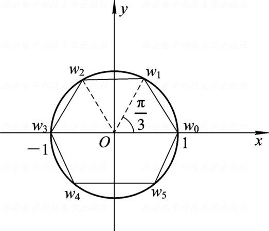
Write the sixth roots as $\displaystyle \omega=e^{i\alpha}$, where $\displaystyle \alpha=\frac{k\pi}{3}$ $\displaystyle (k=0,1,\ldots,5)$. From \[\omega=\frac{1+z}{1-z}\Rightarrow z=\frac{\omega-1}{\omega+1}\] \[z=\frac{e^{i\alpha}-1}{e^{i\alpha}+1}=\frac{\cos\alpha+i\sin\alpha-1}{\cos\alpha+i\sin\alpha+1}\] \[z=\frac{2\sin\frac{\alpha}{2}\left(-\sin\frac{\alpha}{2}+i\cos\frac{\alpha}{2}\right)}{2\cos\frac{\alpha}{2}\left(\cos\frac{\alpha}{2}+i\sin\frac{\alpha}{2}\right)}=\tan\frac{\alpha}{2}\frac{e^{i\left(\frac{\pi}{2}+\frac{\alpha}{2}\right)}}{e^{i\frac{\alpha}{2}}}=i\tan\frac{\alpha}{2}\] The value $\displaystyle \alpha=\pi$ corresponds to $\displaystyle \omega=-1$, for which $\displaystyle \omega+1=0$, so it yields no finite $\displaystyle z$. Therefore, the solutions are \[z=i\tan\frac{\alpha}{2},\qquad \alpha=0,\frac{\pi}{3},\frac{2\pi}{3},\frac{4\pi}{3},\frac{5\pi}{3}.\]
Complex Conjugate
For $\displaystyle z=x+iy$, its complex conjugate（共轭复数） is $\displaystyle \overline{z}=x-iy$. Geometrically, the points $\displaystyle z$ and $\displaystyle \overline{z}$ are symmetric（对称） about the real axis (see Figure 1.7). Hence, $\displaystyle \abs{z}=\abs{\overline{z}}$. If $\displaystyle z\neq0$ and $\displaystyle z$ is not on the negative real axis, then $\displaystyle \arg\overline{z}=-\arg z$.
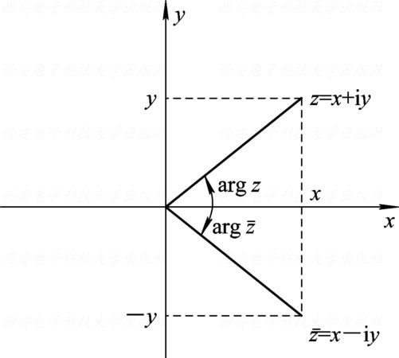
Some useful properties of complex conjugation are
$\displaystyle \abs{z}=\abs{\overline{z}}$, $\displaystyle \arg\overline{z}\equiv-\arg z\pmod{2\pi}$ for $\displaystyle z\neq0$, and $\displaystyle \overline{\overline z}=z$;
$\displaystyle z\overline z = {\left[ {{\mathop{\rm Re}\nolimits} (z)} \right]^2} + {\left[ {{\mathop{\rm Im}\nolimits} (z)} \right]^2} = \left| z \right|^2$
$\displaystyle z+\overline z=2\operatorname{Re}(z)$ and $\displaystyle z-\overline z=2i\operatorname{Im}(z)$;
$\displaystyle \overline{z_1\pm z_2}=\overline z_1\pm\overline z_2$, $\displaystyle \overline{z_1z_2}=\overline z_1\,\overline z_2$, and $\displaystyle \overline{(z_1/z_2)}=\overline z_1/\overline z_2$ for $\displaystyle z_2\neq0$;
If $\displaystyle P$ and $\displaystyle Q$ are polynomials with real coefficients and $\displaystyle Q(z)\neq0$, then $\displaystyle \overline{\left(\frac{P(z)}{Q(z)}\right)} =\frac{\overline{P(z)}}{\overline{Q(z)}} =\frac{P(\overline z)}{Q(\overline z)}$.
Let $\displaystyle z_1=1+2i$ and $\displaystyle z_2=-3-4i$. Find $\displaystyle \frac{z_1}{z_2}$, $\displaystyle \overline{\left(\frac{z_1}{z_2}\right)}$, $\displaystyle \operatorname{Re}\left(\frac{z_1}{z_2}\right)$, and $\displaystyle \operatorname{Im}\left(\frac{z_1}{z_2}\right)$.
\[\begin{aligned} \frac{z_1}{z_2} & =\frac{1+2i}{-3-4i}=\frac{(1+2i)(-3+4i)}{(-3-4i)(-3+4i)} \\ & =\frac{-3-8+(4-6)i}{25}=-\frac{11}{25}-\frac{2}{25}i \end{aligned}\]
Therefore, \[\overline{\left(\frac{z_1}{z_2}\right)}=-\frac{11}{25}+\frac{2}{25}i\]
and hence \[\operatorname{Re}\left(\frac{z_1}{z_2}\right)=-\frac{11}{25},\quad\operatorname{Im}\left(\frac{z_1}{z_2}\right)=-\frac{2}{25}\]
Let $\displaystyle a,b\in\mathbb{R}$, with $\displaystyle b\neq0$ and $\displaystyle \abs{a+ib}=1$. Prove that there exists $\displaystyle c\in\mathbb{R}$ such that $\displaystyle a+ib=\frac{c+i}{c-i}$.
\[\begin{aligned} z & =a+ib \\ \Rightarrow z & =\frac{c+i}{c-i} \\ \Rightarrow c & =\frac{z+1}{z-1}i \\ \Rightarrow c & =\frac{a+ib+1}{a+ib-1}i=\frac{(a+1)+ib}{(a-1)+ib}i=\frac{[(a+1)+ib][(a-1)-ib]}{[(a-1)+ib][(a-1)-ib]}i \\ & =\frac{(a+1)(a-1)+b^2+ib[(a-1)-(a+1)]}{(a-1)^2+b^2}i \\ & =\frac{a^2+b^2-1-2bi}{a^2-2a+1+b^2}i \\ & =\frac{b}{(1-a)}\quad\left(\because a^2+b^2=1\right) \end{aligned}\]
Let $\displaystyle z_1=x_1+iy_1$ and $\displaystyle z_2=x_2+iy_2$ be arbitrary complex numbers. Prove that
$\displaystyle z_1\overline{z_2}+\overline{z_1}z_2=2\operatorname{Re}(z_1\overline{z_2})$;
$\displaystyle \abs{z_1+z_2}\leq\abs{z_1}+\abs{z_2}$.
$\displaystyle \begin{aligned}[t]
z_1\overline{z_2}+\overline{z_1}z_2 & =(x_1+iy_1)(x_2-iy_2)+(x_1-iy_1)(x_2+iy_2) \\
& =(x_1x_2+y_1y_2)+i(x_2y_1-x_1y_2) \\
& \quad+(x_1x_2+y_1y_2)+i(-x_2y_1+x_1y_2) \\
& =2(x_1x_2+y_1y_2) \\
& =2\operatorname{Re}(z_1\overline{z_2})
\end{aligned}$
or $\displaystyle z_1\overline{z_2}+\overline{z_1}z_2=z_1\overline{z_2}+\overline{z_1\overline{z_2}}=2\operatorname{Re}(z_1\overline{z_2})$
Although the triangle inequality has a geometric interpretation, we now prove it algebraically. Since \[\begin{aligned} \abs{z_1+z_2}^2 & =(z_1+z_2)(\overline{z_1+z_2}) \\ & =(z_1+z_2)(\overline{z_1}+\overline{z_2}) \\ & =z_1\overline{z_1}+z_2\overline{z_2}+\overline{z_1}z_2+z_1\overline{z_2} \\ & =\abs{z_1}^2+\abs{z_2}^2+\overline{z_1}z_2+z_1\overline{z_2} \end{aligned}\]
Using $\displaystyle z_1\overline{z_2}+\overline{z_1}z_2=2\operatorname{Re}(z_1\overline{z_2})$, we obtain \[\begin{aligned}
\abs{z_1+z_2}^2 & =\abs{z_1}^2+\abs{z_2}^2+2\operatorname{Re}(z_1\overline{z_2}) \\
& \leq\abs{z_1}^2+\abs{z_2}^2+2\abs{z_1\overline{z_2}} \\
& =\abs{z_1}^2+\abs{z_2}^2+2\abs{z_1}\abs{z_2} \\
& =(\abs{z_1}+\abs{z_2})^2
\end{aligned}\]
Taking square roots on both sides completes the proof of the triangle inequality.
Prove that three pairwise distinct complex numbers $\displaystyle z_1$, $\displaystyle z_2$, and $\displaystyle z_3$ are the vertices of an equilateral triangle if and only if \[z_1^2+z_2^2+z_3^2=z_1z_2+z_2z_3+z_3z_1.\]
Method 1.
The triangle $\displaystyle \triangle z_1z_2z_3$ is equilateral if and only if rotating $\displaystyle \overrightarrow{z_1z_2}$ through $\displaystyle \pm\frac{\pi}{3}$ about $\displaystyle z_1$ gives $\displaystyle \overrightarrow{z_1z_3}$. Thus, $\displaystyle z_3-z_1=(z_2-z_1)e^{\pm i\pi/3}$, or
\[\frac{z_3-z_1}{z_2-z_1}=e^{\pm i\pi/3}=\frac{1}{2}\pm i\frac{\sqrt{3}}{2},\quad\frac{z_3-z_1}{z_2-z_1}-\frac{1}{2}=\pm i\frac{\sqrt{3}}{2}.\]
Squaring both sides and simplifying gives \[z_1^2+z_2^2+z_3^2=z_1z_2+z_2z_3+z_3z_1\]
Method 2.
The equation $\displaystyle z_1^2+z_2^2+z_3^2=z_1z_2+z_2z_3+z_3z_1$ is equivalent to \[\frac{z_2-z_1}{z_3-z_1}=\frac{z_1-z_3}{z_2-z_3} \tag{1}\] If $\displaystyle z_1$, $\displaystyle z_2$, and $\displaystyle z_3$ satisfy (1), then taking absolute values after cross-multiplication gives \[\abs{z_3-z_1}^2=\abs{z_1-z_2}\abs{z_2-z_3} \tag{2}\]
\[\frac{z_2-z_1}{z_3-z_1}-1=\frac{z_1-z_3}{z_2-z_3}-1\]
which is equivalent to \[\frac{z_2-z_3}{z_3-z_1}=\frac{z_1-z_2}{z_2-z_3} \tag{3}\] Taking absolute values gives \[\abs{z_2-z_3}^2=\abs{z_1-z_2}\abs{z_3-z_1} \tag{4}\]
Let $\displaystyle a=\abs{z_2-z_3}$, $\displaystyle b=\abs{z_3-z_1}$, and $\displaystyle c=\abs{z_1-z_2}$. These are positive because the three points are pairwise distinct. Then (2) and (4) read \[b^2=ca,\qquad a^2=cb.\] Dividing the first equation by the second gives $\displaystyle \frac{b^2}{a^2}=\frac{a}{b}$, so $\displaystyle a^3=b^3$ and hence $\displaystyle a=b$. Substituting into $\displaystyle a^2=cb$ gives $\displaystyle c=a$. Therefore, \[\abs{z_2-z_3}=\abs{z_3-z_1}=\abs{z_1-z_2},\] that is, $\displaystyle \triangle z_1z_2z_3$ is equilateral.
Conversely, if $\displaystyle \triangle z_1z_2z_3$ is equilateral, then \[\abs{\frac{z_2-z_1}{z_3-z_1}}=\abs{\frac{z_1-z_3}{z_2-z_3}}=1.\] Moreover, every interior angle equals $\displaystyle \frac{\pi}{3}$, so \[\frac{z_2-z_1}{z_3-z_1}=e^{i\sigma_1\pi/3},\qquad \frac{z_1-z_3}{z_2-z_3}=e^{i\sigma_2\pi/3},\qquad \sigma_1,\sigma_2\in\{1,-1\},\] where, by (1.2.7), \[\begin{aligned} \sigma_1\frac{\pi}{3}&\equiv\arg(z_2-z_1)-\arg(z_3-z_1)\pmod{2\pi},\\ \sigma_2\frac{\pi}{3}&\equiv\arg(z_1-z_3)-\arg(z_2-z_3)\pmod{2\pi}. \end{aligned}\]
Traverse the triangle along the cycle $\displaystyle z_1\to z_3\to z_2\to z_1$. The first quotient is the rotation at $\displaystyle z_1$ from the side toward the next vertex $\displaystyle z_3$ to the side toward the previous vertex $\displaystyle z_2$; the second quotient is the same rotation at $\displaystyle z_3$, from the side toward $\displaystyle z_2$ to the side toward $\displaystyle z_1$. Hence both rotations have the same orientation: $\displaystyle \sigma_1=\sigma_2=1$ if the cycle is counterclockwise, and $\displaystyle \sigma_1=\sigma_2=-1$ otherwise. Therefore, \[\frac{z_2-z_1}{z_3-z_1}=\frac{z_1-z_3}{z_2-z_3}\]
Finally, we illustrate two geometric applications of complex numbers: (i) expressing a plane curve（平面曲线） $\displaystyle F(x,y)=0$ by a complex equation, and (ii) identifying the curve or region represented by a complex equation.
Find a complex equation for the straight line（直线） through $\displaystyle z_1=x_1+iy_1$ and $\displaystyle z_2=x_2+iy_2$.
The line through the distinct points $\displaystyle (x_1,y_1)$ and $\displaystyle (x_2,y_2)$ has the following system of parametric equations（参数方程组）: \[\begin{cases} x=x_1+t(x_2-x_1) \\ y=y_1+t(y_2-y_1) \end{cases}\quad(t\in\mathbb{R}).\] Therefore, with $\displaystyle z=x+iy$, the corresponding complex parametric equation（复参数方程） is \[z=(x_1+iy_1)+t[(x_2+iy_2)-(x_1+iy_1)]=z_1+t(z_2-z_1).\]
Alternatively, write the line in general form（一般式） as $\displaystyle ax+by=c$, where $\displaystyle a,b,c\in\mathbb R$ and $\displaystyle (a,b)\neq(0,0)$. If $\displaystyle z=x+iy$, then \[x=\frac{z+\overline{z}}{2},\quad y=\frac{z-\overline{z}}{2i}\] Substitution gives \[a\left(\frac{z+\overline{z}}{2}\right)+b\left(\frac{z-\overline{z}}{2i}\right)=c\] which can be simplified as \[(a-ib)z+(a+ib)\overline{z}=2c\]
Describe the loci（轨迹） or point sets（点集） represented by the following conditions:
$\displaystyle \abs{z+2i}=2$;
$\displaystyle \abs{z-i}+\abs{z+i}\leq4$;
$\displaystyle 0\leq\arg(z-1)\leq\frac{\pi}{4}$ and $\displaystyle 2\leq\operatorname{Re}z\leq3$.
The equation $\displaystyle \abs{z+2i}=2$ describes all points at distance $\displaystyle 2$ from $\displaystyle -2i$. Hence, it represents the circle（圆） centered at $\displaystyle -2i$ with radius（半径） $\displaystyle 2$ (see Figure 1.8(a)).
The sum of the distances from $\displaystyle z$ to the foci（焦点） $\displaystyle i$ and $\displaystyle -i$ is at most $\displaystyle 4$. This is an ellipse with $\displaystyle 2a=4$ and focal distance $\displaystyle 2c=2$, so $\displaystyle b^2=a^2-c^2=3$. Hence, the condition represents the closed elliptical region \[\frac{x^2}{3}+\frac{y^2}{4}\leq1\] including its boundary (see Figure 1.8(b)).
The condition $\displaystyle 0\leq\arg(z-1)\leq\frac{\pi}{4}$ describes the closed sector with vertex $\displaystyle 1$ bounded by the rays of angles $\displaystyle 0$ and $\displaystyle \frac{\pi}{4}$, that is, $\displaystyle 0\leq y\leq x-1$. Intersecting it with the strip $\displaystyle 2\leq x\leq3$ gives the closed trapezoid（梯形） with vertices $\displaystyle 2$, $\displaystyle 3$, $\displaystyle 3+2i$, and $\displaystyle 2+i$ (see Figure 1.8(c)).
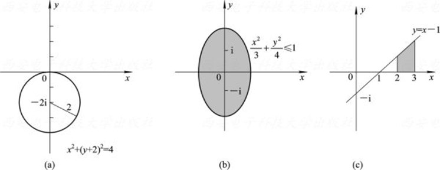
The Riemann Sphere and the Point at Infinity
Consider a sphere（球面） tangent to（相切于） the complex plane at the origin $\displaystyle O$. Let the point of tangency（切点） be the south pole（南极） $\displaystyle S$, and let the perpendicular diameter（垂直直径） through $\displaystyle S$ meet the sphere again at the north pole（北极） $\displaystyle N$ (see Figure 1.9). For each point $\displaystyle z$ in the complex plane, the line through $\displaystyle N$ and $\displaystyle z$ meets the sphere at exactly one additional point $\displaystyle P$. Conversely, every point $\displaystyle P\neq N$ determines exactly one point $\displaystyle z$ in the plane. This correspondence is called stereographic projection（球极投影）, and the sphere is called the Riemann sphere（复球面）.
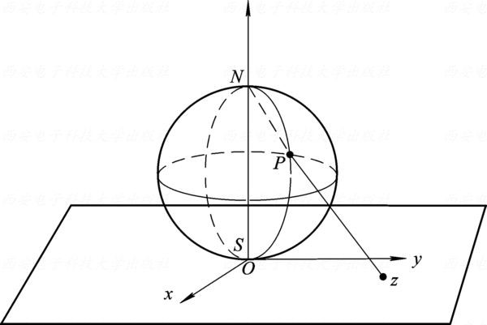
The complex plane together with the point at infinity（无穷远点） $\displaystyle \infty$ is called the extended complex plane（扩充复平面）. Under stereographic projection, finite points correspond to points on the sphere other than $\displaystyle N$, while $\displaystyle \infty$ corresponds to $\displaystyle N$. Thus, the Riemann sphere is a geometric model of the extended complex plane.
There is only one point at infinity in the extended complex plane; it is not separated into $\displaystyle +\infty$ and $\displaystyle -\infty$ as on the extended real line. The point $\displaystyle \infty$ is not an ordinary complex number, so its real part, imaginary part, and argument are undefined. With the extended-modulus convention, one writes $\displaystyle \abs{\infty}=+\infty$.
For a finite complex number $\displaystyle a$, arithmetic involving $\displaystyle \infty$ is only partially defined:
Addition and subtraction: $\displaystyle a+\infty=\infty+a=\infty$ and $\displaystyle a-\infty=\infty-a=\infty$;
Multiplication: $\displaystyle a\cdot\infty=\infty\cdot a=\infty$ for $\displaystyle a\neq0$;
Division: $\displaystyle a/\infty=0$ for finite $\displaystyle a$, while $\displaystyle \infty/a=\infty$ and $\displaystyle a/0=\infty$ for finite $\displaystyle a\neq0$;
The forms $\displaystyle \infty-\infty$, $\displaystyle 0\cdot\infty$, $\displaystyle \infty/\infty$, and $\displaystyle 0/0$ are undefined.
Concepts of Point Sets in the Complex Plane
We begin with a point $\displaystyle z_0$ in the complex plane.
For $\displaystyle \delta>0$, the open disk centered at $\displaystyle z_0$ with radius $\displaystyle \delta$ is \[N_\delta(z_0)=\{z:\abs{z-z_0}<\delta\}.\] It is called the $\displaystyle \delta$-neighborhood（$\displaystyle \delta$ 邻域） of $\displaystyle z_0$ (see Figure 1.10). The set \[N_\delta^*(z_0)=\{z:0<\abs{z-z_0}<\delta\}\] is called the deleted $\displaystyle \delta$-neighborhood（$\displaystyle \delta$ 去心邻域） of $\displaystyle z_0$.
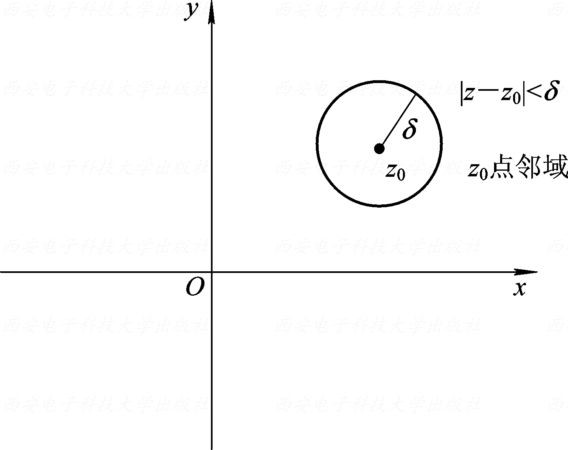
Let $\displaystyle G$ be a point set（点集） in the complex plane.
A point $\displaystyle z_0\in G$ is an interior point（内点） of $\displaystyle G$ if some neighborhood of $\displaystyle z_0$ is contained in $\displaystyle G$.
The set $\displaystyle G$ is an open set（开集） if every point of $\displaystyle G$ is an interior point.
A point $\displaystyle z_0\in\mathbb C$ is a boundary point（边界点） of $\displaystyle G$ if every neighborhood of $\displaystyle z_0$ contains both points of $\displaystyle G$ and points not in $\displaystyle G$.
The set of all boundary points is the boundary（边界） of $\displaystyle G$, denoted by $\displaystyle \partial G$. It may consist of several curves together with isolated points (see Figure 1.11).
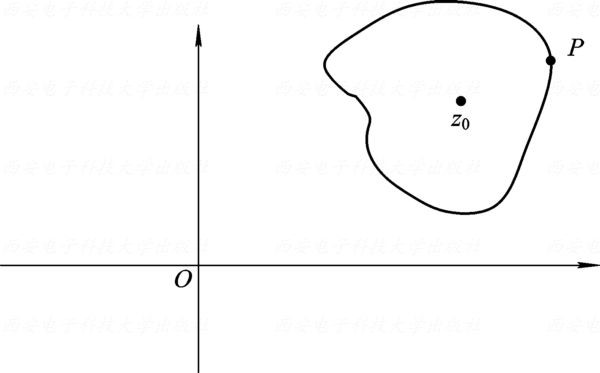
A point $\displaystyle z_0\in G$ is an isolated point（孤立点） of $\displaystyle G$ if there is a $\displaystyle \delta>0$ such that $\displaystyle N_\delta^*(z_0)\cap G=\varnothing$.
A set $\displaystyle G$ is bounded（有界） if there is an $\displaystyle R>0$ such that $\displaystyle \abs z<R$ for every $\displaystyle z\in G$. Otherwise, $\displaystyle G$ is unbounded（无界）.
In the extended complex plane, a neighborhood of infinity（无穷远点邻域） has the form \[N_R(\infty)=\{z:\abs z>R\}\cup\{\infty\},\qquad R>0.\] Removing $\displaystyle \infty$ gives the deleted neighborhood of infinity（无穷远点去心邻域） $\displaystyle N_R^*(\infty)=\{z:\abs z>R\}$.
The Concept of Domains
A nonempty subset $\displaystyle D$ of the complex plane is a domain（区域） if it satisfies both conditions:
$\displaystyle D$ is an open set;
$\displaystyle D$ is connected（连通）: any two points in $\displaystyle D$ can be joined by a polygonal path（折线路径） lying entirely in $\displaystyle D$.
Thus, a domain is an open connected set. Its closure $\displaystyle \overline D=D\cup\partial D$ is sometimes called the associated closed domain（闭区域）.
The following sets are domains:
The open disk（开圆盘） centered at the origin: $\displaystyle \abs z<R$;
The annulus（圆环域） in Figure 1.12(a): $\displaystyle r<\abs z<R$;
The horizontal strip（水平带状域） in Figure 1.12(b): $\displaystyle y_1<\operatorname{Im}z<y_2$;
The upper and lower half-planes（半平面）: $\displaystyle \operatorname{Im}z>0$ and $\displaystyle \operatorname{Im}z<0$;
The left and right half-planes: $\displaystyle \operatorname{Re}z<0$ and $\displaystyle \operatorname{Re}z>0$;
The sector（角域） in Figure 1.12(c): $\displaystyle 0<\arg z<\varphi$, where $\displaystyle 0<\varphi\leq\pi$.
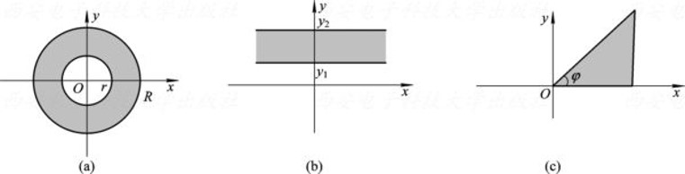
Jordan Curve
Let $\displaystyle x(t)$ and $\displaystyle y(t)$ be continuous real-valued functions on $\displaystyle [a,b]$. The parametric equations \[x=x(t),\qquad y=y(t)\quad(a\leq t\leq b)\] define a continuous curve（连续曲线） in the plane. Equivalently, the curve has the complex parametrization \[z=z(t)=x(t)+iy(t)\quad(a\leq t\leq b).\] The points $\displaystyle z(a)$ and $\displaystyle z(b)$ are its initial point（起点） and terminal point（终点）, respectively.
If $\displaystyle t_1\neq t_2$ and $\displaystyle z(t_1)=z(t_2)$, the common point is called a self-intersection point（自交点） of $\displaystyle C$. For a closed curve, the starting point and the endpoint coincide, but this is not considered a self-intersection.
A continuous curve with no self-intersection is called a simple curve（简单曲线）.
If $\displaystyle z(a)=z(b)$ and there are no other self-intersections, then $\displaystyle C$ is a simple closed curve, also called a Jordan curve（若尔当曲线）.
For example, the circle $\displaystyle \abs z=R$ is a Jordan curve. It separates the complex plane into two disjoint domains: the bounded interior $\displaystyle \abs z<R$ and the unbounded exterior $\displaystyle \abs z>R$. Their common boundary is $\displaystyle \abs z=R$.
Let $\displaystyle C:z=z(t)=x(t)+iy(t)$, $\displaystyle \alpha\leq t\leq\beta$, be a simple or simple closed curve. If $\displaystyle x'(t)$ and $\displaystyle y'(t)$ are continuous and \[[x'(t)]^2+[y'(t)]^2\neq0\] for every $\displaystyle t$, then $\displaystyle C$ is a smooth curve（光滑曲线）. A curve made of finitely many smooth arcs is a piecewise smooth curve（分段光滑曲线）.
Simply and Multiply Connected Domains
Simple closed curves distinguish simply connected domains from multiply connected domains.
A domain $\displaystyle D$ is simply connected（单连通） if the interior of every simple closed curve contained in $\displaystyle D$ also lies in $\displaystyle D$. Otherwise, $\displaystyle D$ is multiply connected（多连通）.
For example, the disk $\displaystyle \abs z<R$ is simply connected, whereas the punctured disk（穿孔圆盘） $\displaystyle 0<\abs z<R$ is multiply connected because it has a hole at $\displaystyle z=0$. More generally, a domain containing a hole is multiply connected.
Describe the point set $\displaystyle P=\{z=r(\cos\theta+i\sin\theta)\}$ for which \[2\cos\theta<r<4\cos\theta\left(-\frac{\pi}{2}<\theta<\frac{\pi}{2}\right).\] Is this set a domain? If so, is it bounded or unbounded, and is it simply or multiply connected?
Write \[z=x+iy=r(\cos\theta+i\sin\theta)\] Then \[r=\sqrt{x^2+y^2}\] \[\cos\theta=\frac{x}{\sqrt{x^2+y^2}}\]
Because $\displaystyle 2\cos\theta<r<4\cos\theta$, \[2r\cos\theta<r^2<4r\cos\theta,\quad2x<x^2+y^2<4x\] The first inequality gives $\displaystyle (x-1)^2+y^2>1$, and the second gives $\displaystyle (x-2)^2+y^2<4$. Thus, the point set is the shaded region in Figure 1.13: \[\begin{cases} (x-1)^2+y^2>1 \\ (x-2)^2+y^2<4 \end{cases}\] Therefore, the set is a bounded, simply connected domain.
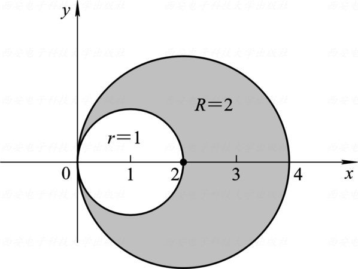
Does the set of points satisfying $\displaystyle \operatorname{Im}z>1$ and $\displaystyle \abs z<2$ form a domain? If so, is it bounded, and is it simply or multiply connected?
Let $\displaystyle z=x+iy$. The conditions become $\displaystyle y>1$ and $\displaystyle x^2+y^2<4$. The shaded set in Figure 1.14 is a bounded, simply connected domain.
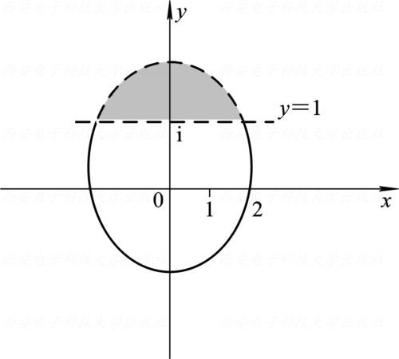
Definition of a Complex Function
Let $\displaystyle G\subseteq\mathbb C$. A complex function（复变函数） $\displaystyle f$ on $\displaystyle G$ is a rule that assigns a unique complex number $\displaystyle w$ to each $\displaystyle z\in G$. We write \[w=f(z),\qquad z\in G.\] The set $\displaystyle G$ is the domain of definition（定义域） of $\displaystyle f$.
A function assigns exactly one value $\displaystyle w$ to each $\displaystyle z$ and is therefore single-valued（单值）. A rule that assigns two or more values to some $\displaystyle z$ is more precisely a multiple-valued correspondence（多值对应）, although it is often called a multiple-valued function. The set \[f(G)=\{f(z):z\in G\}\] is the range（值域） of $\displaystyle f$.
Writing $\displaystyle z=x+iy$ and $\displaystyle w=u+iv$ identifies each complex number with two real coordinates. Hence, a complex function $\displaystyle w=f(z)$ can be written as \[f(x+iy)=u(x,y)+iv(x,y),\] where $\displaystyle u$ and $\displaystyle v$ are real-valued functions（实值函数） of the two real variables $\displaystyle x$ and $\displaystyle y$.
Let $\displaystyle w=f(z)$, with $\displaystyle z=x+iy$ and $\displaystyle w=u+iv$. Since $\displaystyle z\longleftrightarrow(x,y)$, \[\begin{aligned} f(z)&=w=u+iv,\\ f(x+iy)&=\underbrace{\operatorname{Re}f(x+iy)}_{u(x,y)}+i\,\underbrace{\operatorname{Im}f(x+iy)}_{v(x,y)}\\ &=u(x,y)+iv(x,y). \end{aligned}\]
Conversely, any real-valued $\displaystyle u(x,y)$ and $\displaystyle v(x,y)$ on $\displaystyle G$ define a complex function. Hence \[w=f(z)\quad\Longleftrightarrow\quad\begin{cases}u=u(x,y)\\ v=v(x,y)\end{cases}\qquad(x,y)\longmapsto(u,v).\]
The formula may involve $\displaystyle \overline z$, $\displaystyle \abs z$, $\displaystyle \operatorname{Re}z$, $\displaystyle x$, $\displaystyle y$, not only $\displaystyle z$: \[f(z)=\overline z=x-iy\quad\Longrightarrow\quad u(x,y)=x,\quad v(x,y)=-y.\]
For example, consider $\displaystyle w=z^2$. Let $\displaystyle z=x+iy$ and $\displaystyle w=u+iv$. Then \[u+iv=(x+iy)^2=x^2-y^2+2xyi,\] so $\displaystyle w=z^2$ corresponds to the two real-valued functions \[u(x,y)=x^2-y^2,\qquad v(x,y)=2xy.\]
The Concept of Mapping
Under the mapping（映射） $\displaystyle w=f(z)$, the point $\displaystyle w$ is the image（像） of $\displaystyle z$, and $\displaystyle z$ is a preimage（原像） of $\displaystyle w$. We call the domain plane the $\displaystyle z$-plane and the image plane the $\displaystyle w$-plane (see Figure 1.15).
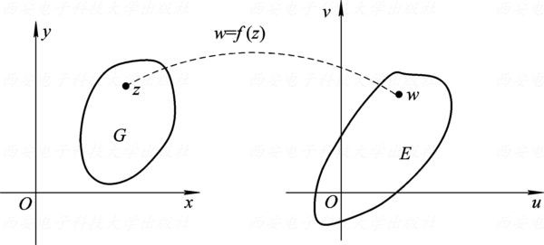
For example, $\displaystyle w=\overline z$ maps $\displaystyle z=x+iy$ in the $\displaystyle z$-plane to $\displaystyle w=x-iy$ in the $\displaystyle w$-plane. Thus, $\displaystyle z_1=1+4i$ maps to $\displaystyle w_1=1-4i$, $\displaystyle z_2=1-3i$ maps to $\displaystyle w_2=1+3i$, and $\displaystyle \triangle ABC$ maps to $\displaystyle \triangle A'B'C'$ (see Figure 1.16).
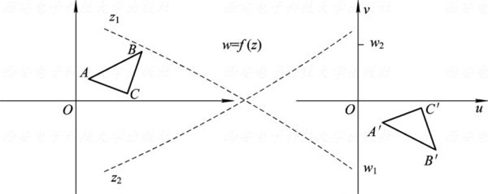
Investigate the mapping properties of the function $\displaystyle w=z^2$.
If $\displaystyle z=re^{i\theta}$ and $\displaystyle w=\rho e^{i\varphi}$, then $\displaystyle w=z^2$ gives \[\begin{cases} \rho=r^2 \\ \varphi\equiv2\theta\pmod{2\pi} \end{cases}\] This yields the following mapping properties:
The ray（射线） $\displaystyle \{re^{i\theta_0}:r\geq0\}$ in the $\displaystyle z$-plane maps to $\displaystyle \{\rho e^{i2\theta_0}:\rho\geq0\}$ in the $\displaystyle w$-plane, as shown in Figure 1.17(a), (b).
For $\displaystyle 0\leq\alpha\leq\pi/2$, the sector $\displaystyle D=\{re^{i\theta}:r\geq0,\ 0\leq\theta\leq\alpha\}$ maps to $\displaystyle G=\{\rho e^{i\varphi}:\rho\geq0,\ 0\leq\varphi\leq2\alpha\}$, as shown in Figure 1.17(c), (d).
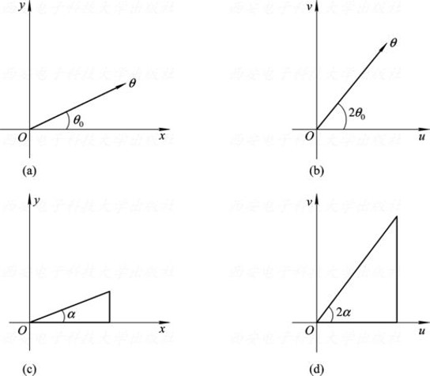
If $\displaystyle z=x+iy$ and $\displaystyle w=u+iv$, then $\displaystyle w=z^2$ gives \[\left\{\begin{array}{ll}u=x^2-y^2\\ v=2xy.\end{array}\right.\] Therefore:
For $\displaystyle c_1\neq0$, the curves $\displaystyle x^2-y^2=c_1$ are rectangular hyperbolas（等轴双曲线） with asymptotes（渐近线） $\displaystyle y=\pm x$; they map to the vertical lines $\displaystyle u=c_1$. For $\displaystyle c_2\neq0$, the curves $\displaystyle 2xy=c_2$ have the coordinate axes as asymptotes; they map to the horizontal lines $\displaystyle v=c_2$ (see Figure 1.18).
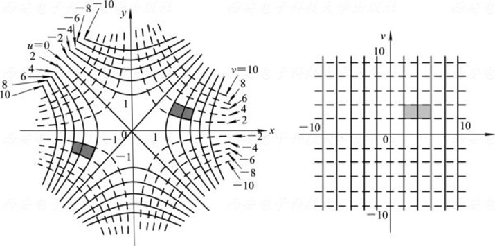
We next determine the images of the two families of lines $\displaystyle x=c_1$ and $\displaystyle y=c_2$ under $\displaystyle w=z^2$.
For $\displaystyle x=c_1$, a line parallel to the imaginary axis in the $\displaystyle z$-plane, we have \[\left\{
\begin{aligned}
u&=c_1^2-y^2 \\
v&=2c_1y
\end{aligned}
\right.
\quad(-\infty<y<\infty).\] Eliminating $\displaystyle y$ gives \[v^2=4c_1^2(c_1^2-u)\]
These are parabolas（抛物线） in the $\displaystyle w$-plane, shown as dashed curves in Figure 1.19(b).
When $\displaystyle c_1=0$, the line is the imaginary axis $\displaystyle x=0$, and its image satisfies \[\left\{
\begin{aligned}
u & =-y^2 \\
v & =0
\end{aligned}
\right.
\Rightarrow
\left\{
\begin{aligned}
u\leq 0 \\
v=0
\end{aligned}
\right.\] Thus, $\displaystyle w=z^2$ maps the imaginary axis in the $\displaystyle z$-plane onto the nonpositive real axis in the $\displaystyle w$-plane.
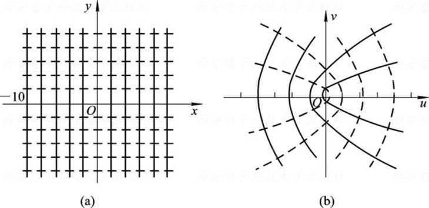
Similarly, the line $\displaystyle y=c_2$, shown dotted in Figure 1.19(a), maps under $\displaystyle w=z^2$ to the parabola \[v^2=4c_2^2\left(u+c_2^2\right)\]
These are the solid curves in Figure 1.19(b). When $\displaystyle c_2=0$, the line is the real axis $\displaystyle y=0$, and its image satisfies \[\left\{ \begin{aligned} u & =x^2 \\ v & =0 \end{aligned} \right. \text{that is} \left\{ \begin{aligned} u\geq 0 \\ v=0 \end{aligned} \right.\] Thus, the real axis in the $\displaystyle z$-plane maps onto the nonnegative real axis in the $\displaystyle w$-plane.
Under the mapping $\displaystyle w=z+\frac{1}{z}$, find the image of the circle $\displaystyle \abs z=2$.
Let $\displaystyle z=x+iy$ and $\displaystyle w=u+iv$. Then \[u+iv=x+iy+\frac{x-iy}{x^2+y^2},\] so \[\left\{ \begin{aligned} u & =x+\frac{x}{x^2+y^2} \\ v & =y-\frac{y}{x^2+y^2} \end{aligned} \right.\tag{1}\]
Parametrize $\displaystyle \abs z=2$ by $\displaystyle x=2\cos\theta$ and $\displaystyle y=2\sin\theta$, where $\displaystyle 0\leq\theta\leq2\pi$. Substitution into (1) gives \[u=\frac52\cos\theta,\qquad v=\frac32\sin\theta.\] Therefore, the image is the ellipse（椭圆） \[\frac{u^2}{(5/2)^2}+\frac{v^2}{(3/2)^2}=1\] in the $\displaystyle w$-plane.
Limits of Complex Functions
Suppose $\displaystyle f$ is defined in a deleted neighborhood of $\displaystyle z_0$. A complex number $\displaystyle A$ is the limit（极限） of $\displaystyle f(z)$ as $\displaystyle z\to z_0$ if, for every $\displaystyle \varepsilon>0$, there exists a $\displaystyle \delta>0$ such that \[0<\abs{z-z_0}<\delta\quad\Longrightarrow\quad\abs{f(z)-A}<\varepsilon.\] We write \[\lim_{z\to z_0}f(z)=A\] or $\displaystyle f(z)\to A$ as $\displaystyle z\to z_0$ (see Figure 1.20).
The same value $\displaystyle A$ must be obtained along every path by which $\displaystyle z$ approaches $\displaystyle z_0$.
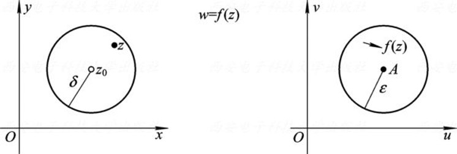
Let $\displaystyle f(z)=u(x,y)+iv(x,y)$, $\displaystyle A=a+ib$, and $\displaystyle z_0=x_0+iy_0$. Then \[\lim_{z\to z_0}f(z)=A\] if and only if \[\lim_{\substack{x\to x_0\\ y\to y_0}}u(x,y)=a,\quad\lim_{\substack{x\to x_0\\ y\to y_0}}v(x,y)=b.\]
Assume $\displaystyle \lim_{z\to z_0}f(z)=A$. For every $\displaystyle \varepsilon>0$, there is a $\displaystyle \delta>0$ such that \[0<\sqrt{(x-x_0)^2+(y-y_0)^2}<\delta\] implies \[\abs{(u+iv)-(a+ib)}<\varepsilon\] that is, \[\abs{(u-a)+i(v-b)}<\varepsilon.\]
Since the absolute values of the real and imaginary parts do not exceed the modulus, \[\abs{u-a}<\varepsilon,\quad\abs{v-b}<\varepsilon\] whenever $\displaystyle 0<\sqrt{(x-x_0)^2+(y-y_0)^2}<\delta$. Therefore, \[\lim_{\substack{x\to x_0\\ y\to y_0}}u(x,y)=a,\quad\lim_{\substack{x\to x_0\\ y\to y_0}}v(x,y)=b\]
Conversely, assume the two real limits hold. Given $\displaystyle \varepsilon>0$, choose $\displaystyle \delta_1,\delta_2>0$ such that \[\abs{u-a}<\frac{\varepsilon}{2}\quad\text{if }0<\abs{z-z_0}<\delta_1,\] \[\abs{v-b}<\frac{\varepsilon}{2}\quad\text{if }0<\abs{z-z_0}<\delta_2.\] Let $\displaystyle \delta=\min\{\delta_1,\delta_2\}$. Then \[\abs{f(z)-A}=\abs{(u-a)+i(v-b)}\leq\abs{u-a}+\abs{v-b}\] so $\displaystyle 0<\abs{z-z_0}<\delta$ implies $\displaystyle \abs{f(z)-A}<\varepsilon$. Hence, $\displaystyle \lim_{z\to z_0}f(z)=A$.
If $\displaystyle \lim_{z\to z_0}f(z)$ exists, it is unique.
If $\displaystyle \lim_{z\to z_0}f(z)$ exists, then $\displaystyle f$ is bounded in some deleted neighborhood of $\displaystyle z_0$.
Suppose $\displaystyle f(z)\to A$ and $\displaystyle f(z)\to B$ with $\displaystyle A\neq B$. Take \[\varepsilon=\frac{\abs{A-B}}{2}:\qquad \{w:\abs{w-A}<\varepsilon\}\cap\{w:\abs{w-B}<\varepsilon\}=\varnothing.\] For $\displaystyle z$ close enough to $\displaystyle z_0$, $\displaystyle f(z)$ would lie in both disks: \[\abs{A-B}\leq\abs{A-f(z)}+\abs{f(z)-B}<\varepsilon+\varepsilon=\abs{A-B},\] a contradiction. Hence $\displaystyle A=B$.
Intuition: $\displaystyle f(z)$ cannot approach two different points at the same time.
Take $\displaystyle \varepsilon=1$. There is a $\displaystyle \delta>0$ such that \[\begin{aligned}0<\abs{z-z_0}<\delta\;&\Longrightarrow\;\abs{f(z)-A}<1\\ &\Longrightarrow\;\abs{f(z)}\leq\abs{f(z)-A}+\abs{A}<\abs{A}+1.\end{aligned}\] Intuition: $\displaystyle f(z)$ is tied to $\displaystyle A$ by a string of length $\displaystyle 1$.
The bound is only local: $\displaystyle f(z)=\frac1z$ satisfies $\displaystyle \lim_{z\to1}f(z)=1$ and is bounded near $\displaystyle 1$, but it is unbounded near $\displaystyle 0$.
The value $\displaystyle f(z_0)$ plays no role, because the neighborhood is deleted.
Contrapositive: if $\displaystyle f$ is unbounded near $\displaystyle z_0$, e.g. $\displaystyle \frac1z$ near $\displaystyle 0$, then $\displaystyle \lim_{z\to z_0}f(z)$ does not exist.
Suppose $\displaystyle f$ and $\displaystyle g$ satisfy \[\lim_{z\to z_0}f(z)=A,\quad\lim_{z\to z_0}g(z)=B.\] Then
$\displaystyle \lim_{z\to z_0}[f(z)\pm g(z)]=A\pm B$;
$\displaystyle \lim_{z\to z_0}[f(z)g(z)]=AB$;
$\displaystyle \lim_{z\to z_0}\frac{f(z)}{g(z)}=\frac{A}{B}\quad(B\neq 0)$.
Show that $\displaystyle f(z)=\frac{\operatorname{Re}z}{\abs z}$ has no limit as $\displaystyle z\to0$.
For $\displaystyle z=x+iy$, \[u(x,y)=\frac{x}{\sqrt{x^2+y^2}},\quad v(x,y)=0\]
Along the positive real axis, let $\displaystyle z=x$ with $\displaystyle x\to0^+$. Then \[f(x)=\frac{x}{\abs x}=1.\] Along the imaginary axis, let $\displaystyle z=iy$ with $\displaystyle y\to0$. Then \[f(iy)=0.\] The two path limits are different, so $\displaystyle \lim_{z\to0}f(z)$ does not exist.
Find the following limits:
$\displaystyle \lim_{z\to i}\frac{z-i}{z\left(1+z^2\right)}$
$\displaystyle \lim_{z\to 1}\frac{z\overline{z}+2z-\overline{z}-2}{z^2-1}$
\[\lim_{z\to i}\frac{z-i}{z\left(1+z^2\right)}=\lim_{z\to i}\frac{z-i}{z(z-i)(z+i)}=\lim_{z\to i}\frac{1}{z(z+i)}=-\frac{1}{2}\]
\[\lim_{z\to 1}\frac{z\overline{z}+2z-\overline{z}-2}{z^2-1}=\lim_{z\to 1}\frac{(\overline{z}+2)(z-1)}{(z+1)(z-1)}=\lim_{z\to 1}\frac{(\overline{z}+2)}{(z+1)}=\frac{3}{2}\]
Continuity（连续性） of Complex Functions
Let $\displaystyle f$ be defined near $\displaystyle z_0$. It is continuous at $\displaystyle z_0$ if \[\lim_{z\to z_0}f(z)=f(z_0).\] Continuity at $\displaystyle \infty$ is defined analogously using neighborhoods of infinity. If $\displaystyle f$ is continuous at every point of a domain $\displaystyle D$, then $\displaystyle f$ is continuous on $\displaystyle D$.
The complex function $\displaystyle f(z)=u(x,y)+iv(x,y)$ is continuous at $\displaystyle z_0=x_0+iy_0$ if and only if both $\displaystyle u$ and $\displaystyle v$ are continuous at $\displaystyle (x_0,y_0)$, that is, \[\lim_{\substack{x\to x_0\\ y\to y_0}}u(x,y)=u(x_0,y_0)\] \[\lim_{\substack{x\to x_0\\ y\to y_0}}v(x,y)=v(x_0,y_0)\]
Sums, differences, and products of functions continuous at $\displaystyle z_0$ are continuous at $\displaystyle z_0$. Their quotient is also continuous there if the denominator is nonzero at $\displaystyle z_0$.
If $\displaystyle g$ is continuous at $\displaystyle z_0$ and $\displaystyle f$ is continuous at $\displaystyle g(z_0)$, then the composite function（复合函数） $\displaystyle f\circ g$ is continuous at $\displaystyle z_0$.
Prove that $\displaystyle f(z)$ is not continuous at the origin, where \[f(z)=\begin{cases} \frac{xy}{{x^2+y^2}}, & z\neq 0 \\ 0, & z=0 \end{cases}\]
If $\displaystyle f$ were continuous at the origin, then \[\lim_{z\to0}f(z)=f(0)=0.\]
Along the line $\displaystyle y=x$, let $\displaystyle z=x+ix$ with $\displaystyle x\to0$. Then \[f(x+ix)=\frac{x^2}{2x^2}=\frac12.\] Along the imaginary axis, let $\displaystyle z=iy$ with $\displaystyle y\to0$. Then \[f(iy)=0.\] The path limits differ, so the limit does not exist. Hence, $\displaystyle f$ is not continuous at the origin.
A function $\displaystyle f$ defined on a curve $\displaystyle C$ is continuous at $\displaystyle z_0\in C$ if \[\lim_{z\to z_0}f(z)=f(z_0)\quad(z\in C)\] where $\displaystyle z$ is restricted to $\displaystyle C$. If $\displaystyle C$ is parametrized over a closed bounded interval and $\displaystyle f$ is continuous on $\displaystyle C$, then $\displaystyle f$ is bounded on $\displaystyle C$. Thus, there exists $\displaystyle M>0$ such that \[\abs{f(z)}\leq M\qquad(z\in C).\]
Along $\displaystyle C$, $\displaystyle z$ may approach $\displaystyle z_0$ only through points of $\displaystyle C$. For example, \[f(z)=\begin{cases}\frac{xy}{x^2+y^2}, & z\neq0\\ 0, & z=0\end{cases}\qquad C:\ z(t)=t,\ t\in[-1,1].\]
In the plane: $\displaystyle f$ is not continuous at $\displaystyle 0$ (along $\displaystyle y=x$ the limit is $\displaystyle 1/2$).
On $\displaystyle C$: $\displaystyle y=0$, so $\displaystyle f(z)\equiv0$ and $\displaystyle f$ is continuous on $\displaystyle C$.
Restricting $\displaystyle z$ to $\displaystyle C$ leaves only one way to approach $\displaystyle z_0$, so the condition is weaker.
Parametrization turns the curve $\displaystyle C$ into an interval $\displaystyle [a,b]$: \[z=z(t),\ t\in[a,b]\ \Longrightarrow\ g(t)=\abs{f(z(t))}\ \text{continuous on }[a,b].\] By the extreme value theorem（最值定理）, $\displaystyle g(t)\leq g(t^*)=M$ for some $\displaystyle t^*\in[a,b]$.
Not closed: $\displaystyle z(t)=t$, $\displaystyle t\in(0,1]$, $\displaystyle f(z)=1/z$ is continuous but unbounded.
Not bounded: $\displaystyle z(t)=t$, $\displaystyle t\in[1,+\infty)$, $\displaystyle f(z)=z$ is continuous but unbounded.
In Chapter 3, this $\displaystyle M$ gives the estimate $\displaystyle \abs{\int_C f\,dz}\leq ML$.